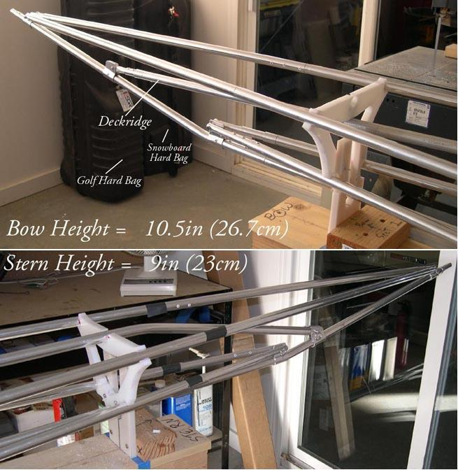

| Sea Glider | Menu Last Page Next Page |
|
 On the Sea Glider, inwales are no longer used. Instead, the fore and aft deckridge connects lower onto the stems to reduce excess frame flex. This lower attachment plus a 2 tube internal bracing system are a bit more rigid than the inwales they replace and easier to assemble. See next page. |
|